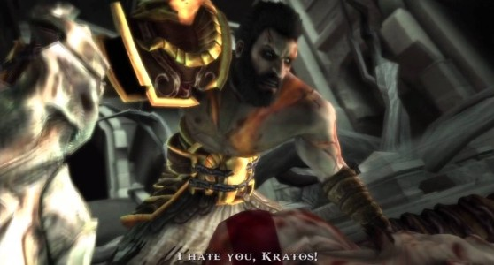
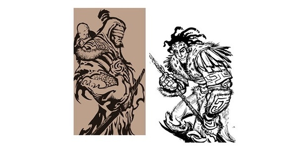
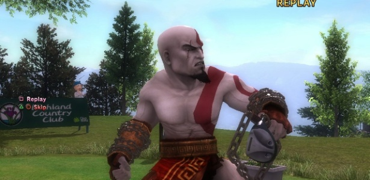
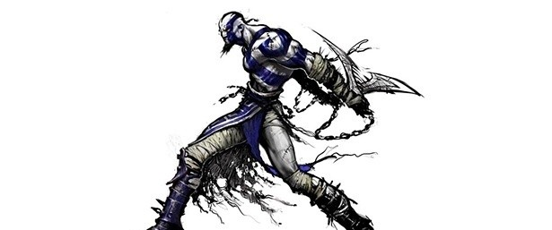

Curiosidades

No início, Kratos não era Kratos, era Deimos. O nome foi descartado para o protagonista da série, mas nunca abandonado, tanto que acabou virando o nome do irmão mais novo de Kratos.
A pele de Kratos é branca por conta da maldição de um oráculo. Para nunca esquecer disso, a oráculo condenou Kratos a carregar na pele as cinzas da família.

Antes de chegar ao icônico Kratos careca que virou sinônimo da série de ação, a equipe de desenvolvimento do primeiro jogo passou por algumas ideias bem menos convencionais. Dentre as mais notórias, uma delas mostrava Kratos como uma espécie de monge cego carregando uma criança nas costas (não se sabe exatamente quem é o bebê) e outra aparecia como um guerreiro de aspecto tribal, com uma lança na mão, cabelos desgrenhados e adereços que lembram penas.

Com o sucesso em "God of War", Kratos trilhou o caminho de convidado especial em diversos games. A primeira, e mais inusitada, aparição foi no esportivo "Hot Shots Golf: Out of Bounds", mas depois ele apareceu também em "Soulcalibur: Broken Destiny", "Mortal Kombat", "PlayStation All-Stars Battle Royale", "Shovel Knight" e como 'roupinha' em outros títulos, como "Modnation Racers", "LittleBigPlanet" e "Tearaway Unfolded".
Tanto a cicatriz no rosto quanto a tatuagem vermelha de Kratos têm relação com o irmão Deimos. A cicatriz veio quando ainda eram crianças: Ares sequestrou Deimos, Kratos tentou impedir e levou um corte no olho. Por conta do sumiço do irmão, Kratos fez uma tatuagem vermelha pelo corpo, idêntica à marca de nascença do irmão.

Poucos dias antes da produção do primeiro jogo da série terminar, Kratos já exibia o visual que conhecemos, com exceção de um único detalhe: suas tatuagens eram azuis, não vermelhas. Foi aí que alguém percebeu enorme semelhança entre o 'Kratos azul' e o bárbaro de "Diablo II". Às pressas, ajustes foram feitos e o primeiro "God of War" mostrou o espartano com as tattoos vermelhas que conhecemos.